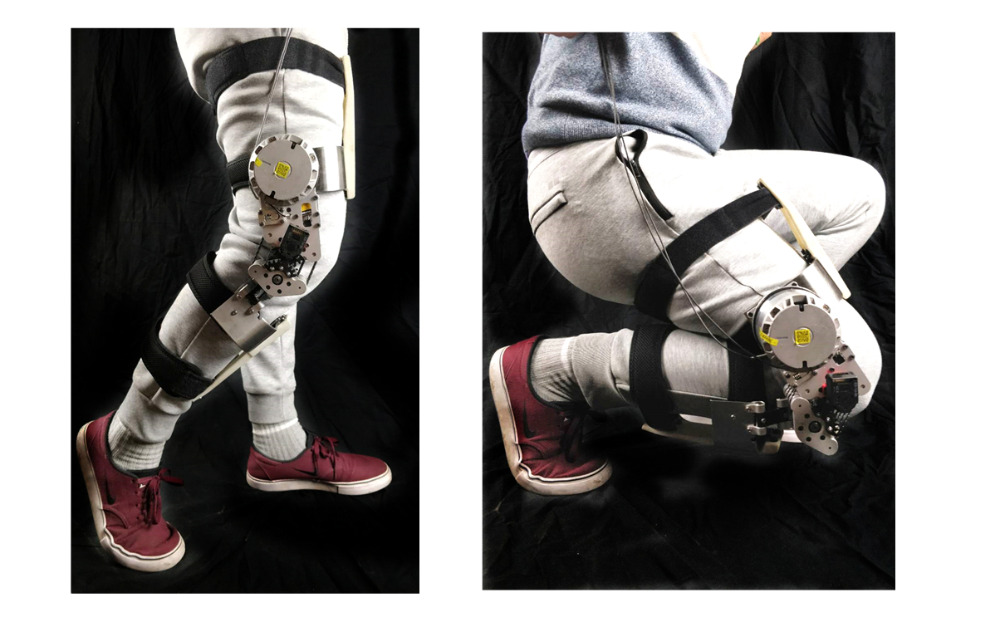

Soft Exoskeleton for Human Augmentation and Restoration
We are developing both enabling technologies (i.e. high torque density motors and soft fabric sensors) and robotic systems to augment human capability with wearable robots. Soft exoskeleton is a new design methodology that optimizes both comfort and performance of the users.

MRI-guided Robot for Neurosurgery and Prostate Biopsy
In collaboration with Harvard Medical School, we have developed three generations of MRI-guided prostate intervention robots in collaboration with Johns Hopkins and Brigham and Women's Hospital. The robotic system, designed to improve prostate cancer biopsies, is being tested as part of a larger clinical trial at BWH. The first generation is a cylidrical needle placement robot, the 2nd generation utilized a concentric tube mechanism to actively steer needles, and the third generation deploys a parallel mechanism for angulated needle placement. Prostate cancer is the last form of cancer still diagnosed with blind needle biopsies, so we are working to change that with image-guided technology.


High Performance Electric Motor
High torque density actuator enables a new robot design paradigm - quasi-direct drive, that significantly improves the bandwidth and transparency of co-robots that interact with human or the enviroment. We developed a novel knee exoskeleton combining the advantages of a high torque density motor and a bi-directional cable transmission system. The exoskeleton is lightweight and highly backdrivable. Performance evalutation demonstrates that the torque control bandwidth is up to 30Hz. These characteristics enables safe interaction between users and the exoskeleton.

Fabry-Perot Interferometer Fiber Optic Force Sensor
Traditional sensors in robotics include force and positioning sensing. However, off-the-shelf sensors are not suiatable for use in MRI due to the potential for image degradation, malfunction, or safety issues. We are evaluating and developing sensors to be used in the MR environment. The current focus is on optical techniques for force and position sensing that do not compromise image quality and will allow for haptic feedback during MRI-guided interventions.

-
Academia and Industry Collaborators
- Eugene Goldfield, Ph.D., Boston Children's Hospital, Harvard Medical School
- Conor Walsh, Ph.D., School of Engineering and Applied Sciences, Harvard University
- Mar Cortes, Rehabilitation Medicine, Cornell University
- Greogory Fischer, Ph.D., Associate Professor, Mechanical Engineering, Worcester Polytechnic Institute
- Xuan Liu, Ph.D., Ph.D., Assistant Professor, Electrical and Computer Engineering, New Jersey Insitute of Technology
- Richard Foulds, Ph.D., Associate Professor, Biomedical Engineering, New Jersey Insitute of Technology
- Nobuhiko Hata, Ph.D., Director of Surgical Navigation and Robotics Laboratory, Brigham and Women's Hospital, Harvard Medical School
- Junichi Tokuda, Ph.D., Assistant Professor in Radiology, Brigham and Women's Hospital, Harvard Medical School
- Clare Tempany, M.D., Professor of Radiology, Chair of Radiology Research, Co-director of the National Center of Image Guided Therapy (NCIGT), Brigham and Women's Hospital, Harvard Medical School
- Iulian Iordachita, Ph.D., Associate Research Professor, Johns Hopkins University
- Robert J. Webster III, Ph.D., Associate Professor, Mechanical Engineering, Vanderbilt University
- Rober LaDuca, CEO, Duke Imperical Inc., A Minimally Invasive Device Company, Santa Cruz, Califonia, USA
- Gregory Cole, Ph.D., Senior Research Scientist, ABB Corporate Research Center United States
- Biao Zhang, Ph.D., Senior Research Scientist, ABB Corporate Research Center United States
- Samuel Kesner, Ph.D., Director of Corporate Research, Myomo Inc.
- Hua Xie, Ph.D., Princinpal Research Scientist, Philips Research North America, Cambridge, Massachusetts, USA
- Shougang Wang, Ph.D., Marketing Manager, Microchip Inc.